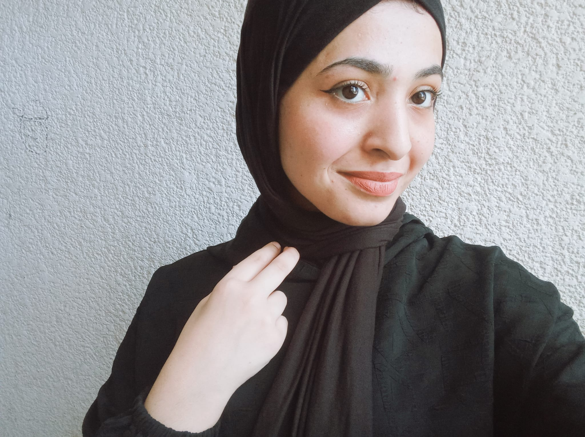

Programmer & Aspiring Web Developer
I have a deep passion for programming and technology. My ultimate goal is to become a professional web developer, creating innovative digital solutions and mastering the art of modern web technologies.